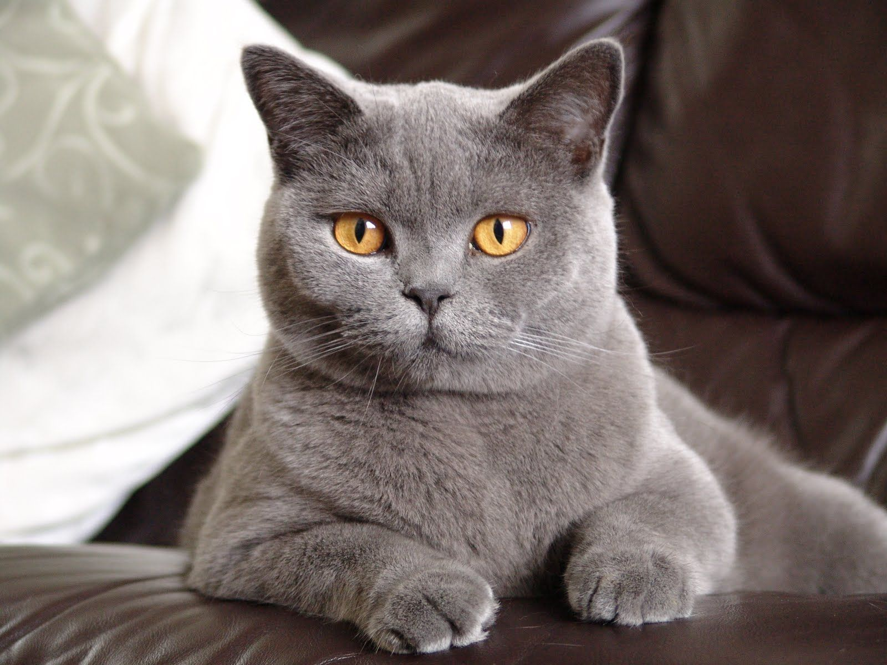
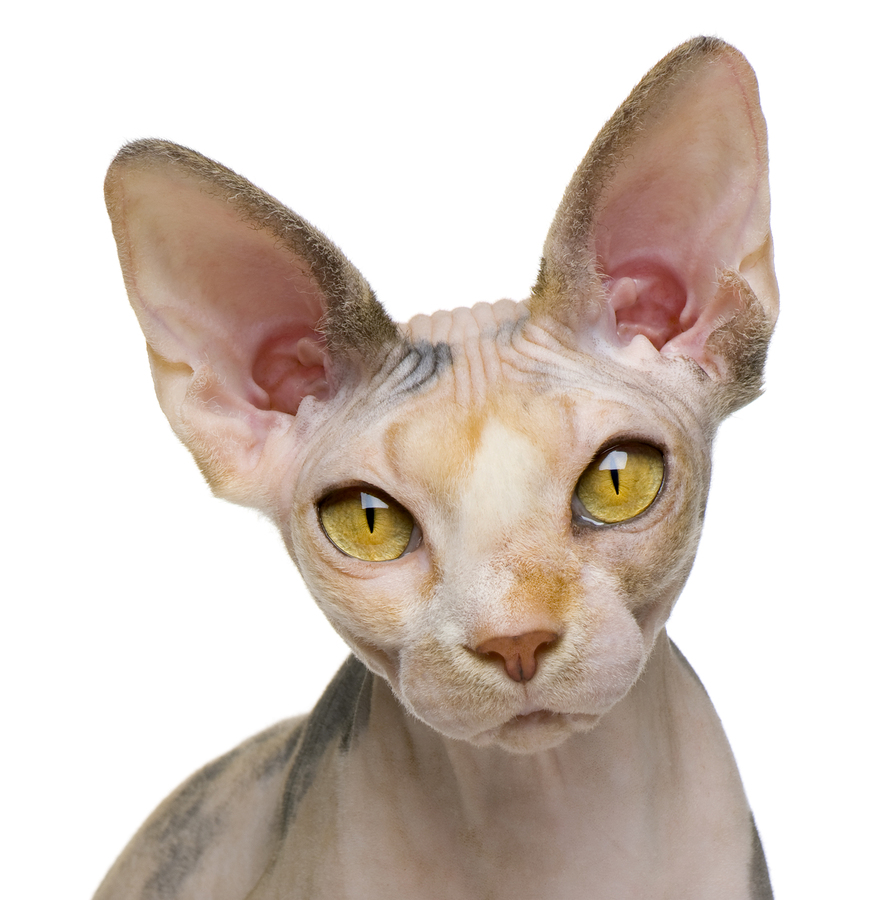
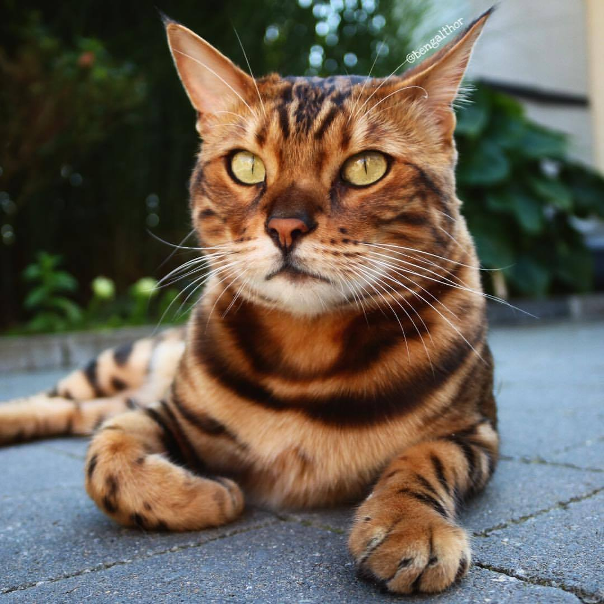
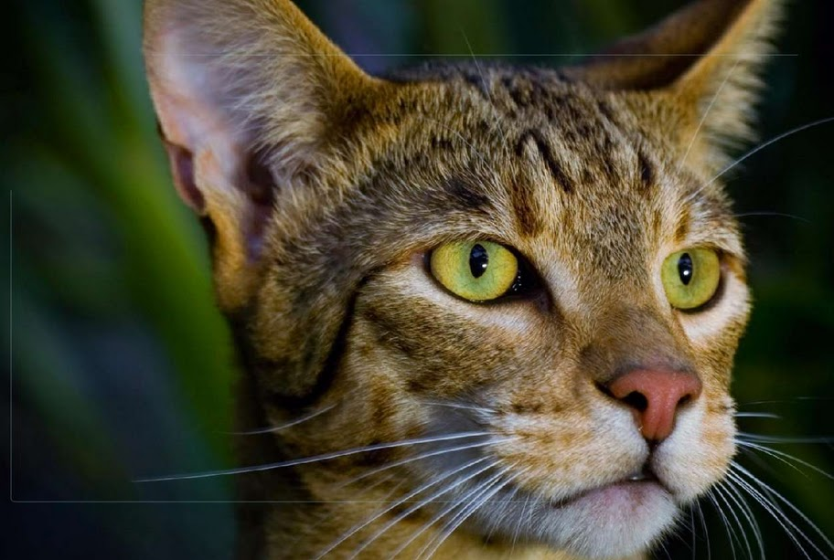

(ლათ. Félis silvéstris cátus) — მტაცებელი ძუძუმწოვარი ცხოველი კატისებრთა ოჯახისა. შინაური კატა გამოირჩევა მეგობრობის უნარით. ადამიანისა და კატის მეგობრობა 10 000 წელია გრძელდება, თავიდან მან ადამიანების დაფასება მოიპოვა იმით, რომ ანადგურებდა პარაზიტებს. ის ჭკვიან ძუძუმწოვრებს მიეკუთვნება და ექვემდებარება გაწვრთნას. უბრალო კატამ შეიძლება მოახდინოს მანიპულირება სხვადასხვა საგანზე ან მექანიზმზე. გამოირჩევა მისტიციზმითა და უცნაურობით. მასზე შექმნილი და დაწერილია მრავალი მითი. კატას ინტელექტის თვალსაზრისით შეუძლია სწავლა, ფიქრი, ამა თუ იმ პრობლემის გადაჭრა, მოხერხებულობა და გონიერება. სახლის კატები შეგუების უნარით ხასიათდებიან. ზოგიერთი კატა მტაცებელია (უყვარს ნადირობა), ამიტომ მათ უწევთ ფიქრი, თუ როგორ მოიტაცონ ესა თუ ის ცხოველი, შემდეგ შეკრან მსხვერპლი, როგორც აკეთებენ მგლები.
კატები არიან ხორცისმჭამელი ცხოველები. მგლების, ძაღლების, მელიების და სხვა ზოგიერთი მტაცებლებლისგან განსხვავებით კატები არიან ყველაფრის მჭამელები. მიჩვევის შემთხვევაში, კატას შეუძლია გახდეს ვეგეტარიანელი, თუმცა, ჩვეულებრივ მოითხოვენ ხორცს. მათ ბრჭყალებს შეუძლია საჭმლის დაჭრა. კატებს აქვთ მოკლე ნაწლავები (როგორც ყველა ხორცისმჭამელს). ზოგჯერ, ისინი მუცელს ისუფთავებენ რწყევით, თუმცა ეს შეიძლება იყოს დაავადებაზე მომანიშნებელიც. კატის კუჭ-ნაწლავის ჯანმრთელობისთვის სასარგებლოა ხორბლის ყლორტი. კატებს, რომლებსაც შეუძლიათ გარეთ გასვლა, ცდილობენ მოიპოვონ საკვები, როგორიცაა თაგვები და მცირე ფრინველები.
| ბრიტანული მოკლებეწვიანი | შოტლანტიური ფოლდი | სფინქსი | ბენგალური კატა | აშერა |
|---|---|---|---|---|
|  |  |  |  | |
| 1500$ | 3000$ | 3000$ | 25000$ | 125000$ |